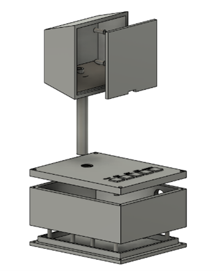
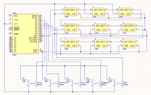
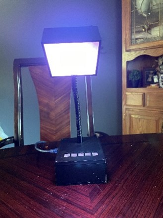
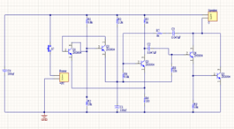
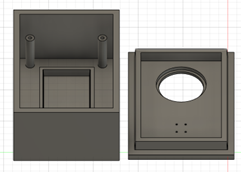
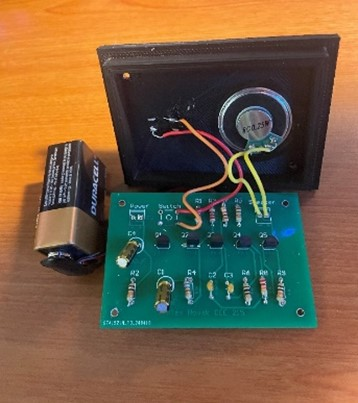

RGB LED Lamp - Personal Project
What?
My room was feeling a little dark, so I decided to brighten it up with a custom-designed lamp. This RGB LED lamp can change colors and even has a fun disco mode!
How?
• Designed the lamp's physical components in CAD using Fusion 360.

• Created the necessary circuitry using Altium Designer and soldered the components together.

• Programmed the Arduino in C++ to control the lamp based on button inputs.
• Utilized 3D printing to fabricate the lamp's pieces.

Results
The lamp successfully brightened up my room, allowed color changes at the press of a button, and included an entertaining disco mode.
Whooper Alarm - UW-Stout, Electronics
What?
Designed a small alarm that emits a whooping sound when activated. The project involved researching semiconductor physics and selecting appropriate components.
How?
• Designed the circuit and PCB using Altium Designer.

• Created an enclosure using CAD software and 3D-printed it.

• Developed oscillators with npn and pnp Bipolar Junction Transistors to generate the whooping sound.
• Incorporated capacitors to regulate timing and reduce noise.

Results
Gained hands-on experience with semiconductor and transistor concepts. Developed skills in PCB design and CAD. The alarm functioned as intended, producing a whooping sound when the circuit was closed.